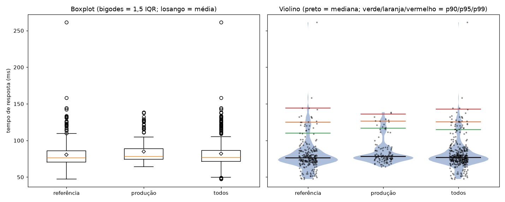
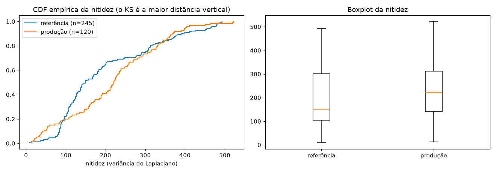
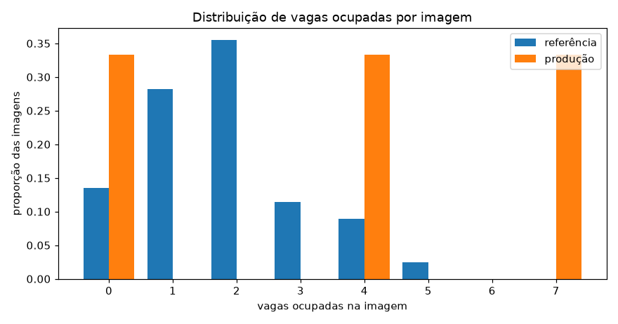

AV2 · Serviço de detecção de ocupação de vagas (BentoML + YOLOv8n-OBB) ·
repositório BLU-MLOPS, branch parte-2 · novembro de 2026
1. O que foi feito
Tempo de resposta: 365 pedidos ao endpoint POST /prever_ocupacao,
com o tempo de cada pedido registrado. Um script gera o relatório não paramétrico:
quartis, p90, p95, p99, intervalo de confiança do p95, boxplot e gráfico de violino.
Conjuntos: referência com as 245 fotos de treino do modelo (fotos de
celular, de perto); produção com 120 imagens que simulam a câmera fixa (40
variações de cada uma das 3 fotos da maquete inteira vista de cima, com mudanças de luz,
leve rotação, desfoque, lente suja em 10% delas, ruído e compressão JPEG).
Drift: os dois conjuntos foram submetidos ao servidor. A variável de entrada
nitidez (variância do Laplaciano, contínua) foi comparada por KS; a
variável de saída ocupadas (inteiro de 0 a 7, discreta) foi comparada por
PSI. A nitidez vem do log em arquivo da Parte 1, ligado a cada pedido
pelo request_id.
Dashboard (no lugar do Streamlit): um exportador recalcula KS, PSI e percentis
exatos a cada 10 s sobre os últimos 100 pedidos do log. O Grafana mostra os resultados no
painel BLU - Estatísticas (AV2).
2. Tempo de resposta (p90, p95, p99)
Medição no cliente, do envio até a resposta completa. Os pedidos foram enviados um por vez,
com o serviço em Docker e em CPU, depois de 3 pedidos de aquecimento descartados (o
primeiro carrega o modelo e leva segundos).
Conjunto
n
p50
p90
p95
p99
máx.
IC 95% do p95
referência
245
76,1
109,8
125,1
144,2
261,3
116,9 – 132,2
produção
120
78,4
116,7
126,3
136,3
138,7
116,7 – 132,0
todos
365
76,9
114,7
125,6
142,9
261,3
120,1 – 131,5
Valores em milissegundos. Percentis
com interpolação linear; intervalo de confiança por bootstrap (2000 reamostragens).
SLA atendido com folga: 95% dos pedidos levaram até 126 ms, cerca de um
terço de um SLA de exemplo de 400 ms. Nenhum pedido passou de 400 ms.
Cauda curta: o p99 (143 ms) fica perto do p95. O único pedido muito lento
(261 ms) aparece só no máximo. Com n = 365, o p99 é o 4º ou 5º maior tempo, então varia
muito entre rodadas; o p95 é mais estável, por isso os SLAs usam o p95.
Por que percentis, e não média: a distribuição é assimétrica à direita. A média
(82 ms) fica acima da mediana (77 ms) e não diz quantos pedidos passaram de um limite.

Figura 1 – Boxplot (esquerda) e gráfico de violino (direita) do tempo de
resposta. No violino, as linhas marcam a mediana e o p90, o p95 e o p99.
Leitura do boxplot e do violino
Boxplot: a caixa é estreita (metade dos pedidos entre 71 e 86 ms) e a cauda é só
para cima. Todos os pontos atípicos (14% dos pedidos) estão acima do bigode superior.
Violino, o que o boxplot esconde: os "atípicos" formam um segundo grupo,
entre 110 e 140 ms, nos dois conjuntos. Pelo log do servidor, o modelo leva o mesmo tempo
nesses pedidos. Os cerca de 60 ms a mais acontecem fora da inferência, em rajadas, sem
relação com o tipo de imagem nem com a coleta do Prometheus. A causa provável é disputa
de CPU na máquina, ainda não confirmada. É esse grupo que define o p95.
Na referência, o violino também mostra um grupo rápido, por volta de 57 ms. São
as 45 fotos com proporção de 1:2 ou mais estreita: o modelo as encaixa em 640 px mantendo
a proporção, gera uma matriz menor, e a inferência cai de cerca de 52 para 37 ms.
3. Drift entre referência e produção
Entrada: nitidez (contínua → KS)
Conjunto
Q1
mediana
Q3
referência
105,0
148,9
300,9
produção
141,3
221,3
311,7
D = 0,253 (D crítico para α = 0,05: 0,151), p-valor = 5·10-5.
As distribuições são diferentes. As imagens de produção são mais nítidas: na
nitidez de 201, as curvas acumuladas mostram 66% da referência abaixo desse valor,
contra 41% da produção.
Saída: ocupadas (discreta, 0 a 7 → PSI)
ocupadas
0
1
2
3
4
5
6
7
referência
13%
28%
36%
11%
9%
2%
0%
0%
produção
33%
0%
0%
0%
33%
0%
0%
33%
PSI = 14,4, muito acima de 0,25: drift. O valor é inflado porque as
categorias sem nenhum caso recebem 10-6 para o logaritmo existir; a conclusão
não depende disso.

Figura 2 – Curvas acumuladas da nitidez (o KS é a maior distância vertical
entre elas).

Figura 3 – Vagas ocupadas por imagem, referência × produção.
Interpretação: o drift não é falha do modelo, é diferença de cenário. A referência
são fotos de celular de perto, que mostram em geral 1 ou 2 vagas ocupadas e têm partes fora
de foco. A produção mostra a maquete inteira de cima, com as 7 vagas e as linhas nítidas;
por isso as respostas são sempre 0, 4 ou 7 ocupadas, conforme a cena. O modelo deu a mesma
resposta nas 40 variações de cada cena, inclusive nas 12 com desfoque forte. Os dois testes
cumprem o papel: avisam que o serviço recebe imagens diferentes das usadas no treino.
4. Monitoramento contínuo no Grafana
O exportador de drift recalcula o KS e o PSI a cada 10 s sobre os últimos 100 pedidos. Para
validar, os dois conjuntos foram enviados em sequência enquanto o painel era observado:
Últimos 100 pedidos vindos de...
KS (D)
D crítico
PSI
Painel mostrou
fotos de referência
0,118
0,161
0,019
estável / estável
fotos de produção
0,311
0,161
15,3
DRIFT / DRIFT
O painel também mostra os percentis exatos e um boxplot da latência ao longo do tempo. O
painel principal foi revisado:
erros do cliente (4xx) separados das falhas do servidor (5xx);
p95 com o SLA de 400 ms e com o valor exato ao lado do estimado pelas faixas do
histograma;
ocupação média no lugar do valor de uma única imagem.
5. Conclusões e limitações
Desempenho adequado: p50 de 77 ms e p95 de 126 ms, para um cliente por vez em CPU.
Com vários clientes simultâneos os percentis seriam maiores. O ganho para reduzir o p95
está em eliminar a disputa de CPU, não em acelerar o modelo.
O estado da máquina pesa: uma primeira rodada, logo após ligar o Docker Desktop,
deu p95 de 224 ms. Os números acima são de uma segunda rodada, com o ambiente estável.
SLAs devem ser medidos com o serviço aquecido e em mais de uma rodada.
A referência não representa a produção: o próximo passo é refazê-la com fotos da
câmera fixa. Assim, um KS ou PSI alto passa a indicar mudança real (foco, luz, posição da
câmera ou padrão de ocupação).
Como reproduzir (manual completo na seção 9 do README):
uv run just docker, uv run just up, uv run just av2.
Scripts em scripts/: gerar_producao.py,
submeter_conjunto.py, relatorio_estatisticas.py e
exportador_drift.py. Resultados versionados em estatisticas/.
Painéis em http://localhost:3001.